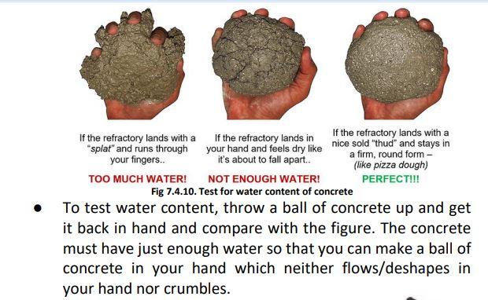
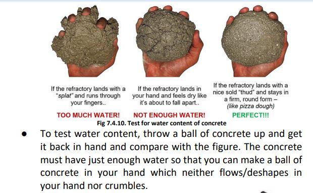

Cement Concrete and Mortar
● Cement mortar is used in the construction of walls to bind the bricks/blocks in position.


● Use Ordinary Portland cement (OPC) for RCC work, plastering, and other structural applications.
● Use Portland or Portland Pozzolana cement (43 grade) for making mortar for brick/block masonry.

● Use richer mortar (e.g., 1:5 or 1:4) for making corners and edges during plaster and for repair work.
● Use one part of cement with 6 parts of clean sand for making mortar for masonry work and plaster.

● Do not mix water to a large volume of mortar at a time. Mortar/concrete must be used in place within 30 minutes of adding water to the mortar mix.


 
